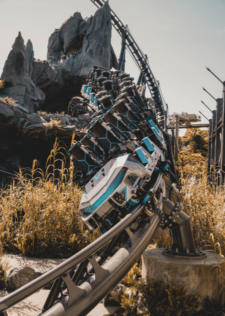
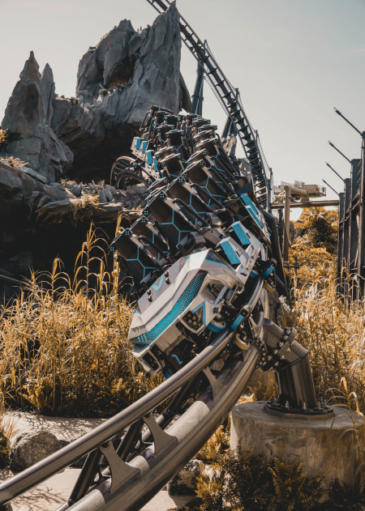

Para grandes y chicos, con atracciones alucinantes que nos van a dejar los pelos de punta. Vamos de lleno a Island of Adventure.
Como llegar a Island of Adventure
Este punto depende, como siempre, de donde estemos alojados. Si estamos en un hotel dentro de Universal vamos a poder llegar al parque a pie, en water taxi y en autobus, ya que los hoteles están muy cerca de los parques.
Si estamos alojados en un hotel de Disney las opciones son auto, taxi o Uber.
Hay hoteles fuera del sector de Universal o Disney, que ofrecen, como parte de la estadía, traslados gratuitos desde y hacia los parques. Si se deciden por esta opción la llegada es muy sencilla. El bus los va a dejar en la zona de descarga de pasajeros, la cual está exactamente debajo del sector de seguridad e ingreso a los parques.
Si deciden ir en auto el proceso sigue siendo muy sencillo. Los dos parques de Universal comparten el mismo estacionamiento, solo tienen que dejar el auto, recordar en que sector quedó, y dirigirte hacia el sector de seguridad.
Una vez que paasamos el control de seguridad, tendremos que caminar por una pasarela larga que nos lleva hacia el sector del Universal CityWalk, y luego de eso hasta la entrada del parque.
Es fácil distinguir en ingreso a Island of Adventure porque vamos a ver el faro gigante que se encuentra en el sector de boletería.
En el ingreso, propiamente dicho, tendrán que escanear sus tickets y asociarlos con una huella digial, la misma que utilizarán todos los días que ingresen al parque.
Un punto importante es que, en todo el parque, tendrán cobertura de wifi gratis para conectar sus dispositivos.
Cuantos días para Island of Adventure
Si leyeron la parte de Universal sabrán que un poco adelantamos sobre los días para ambos parques.
La dimensión de ambos parques de Universal no es tan inmensa como las de Disney, pero sí es verdad que están caragados de atracciones interesantes, sobre todo Island of Adventure.
Hay mucho para ver en este parque, pero sí podemos decirte que puede alcanzar con un día de visita, pero también es cierto que recomendamos sacar ticket por 3 días para los dos parques (importante: incluír Park Hopper).
Una vez que pasamos la entrada de Island of Adventure nos encontramos con el sector de "Port of Entry", el cual no tiene atracciones pero sí cuenta con varias tiendas con meerchandising increíble, y nos pone a tono con todo lo que nos vamos a encontrar más adelante.
Pasando ese sector nos topamos con el lago central del parque, alrededor del cual se organizan las "islas" o sectores. Si empezamos hacia nuestra izquierda nos encontramos con el sector "Marvel", y lo primero que salta a la vista es la increíble montaña rusa de Hulk. Otra cosa para no perderse en esta zona, aparte de las tiendas donde vamos encontrar comics, ropa, accesorios y más, es el simulador de Spiderman.

La siguiente "isla" será "Toon Lagoon", una zona dedicada a caricatura de los años '50. Acá vamos a tener mil lugares para sacarnos fotos excelentes, y dos atracciones de agua para mojarnos. Luego de esto nos vamos a encontrar con "Kong" y su atracción Skull Island: Reign of Kong, recomendable no perdersela.
El siguiente sector será uno de los interesantes: "Jurassic Park". Ambientada en las películas de Steven Spielberg, vamos a tener la chance de sacarnos fotos con algún que otro Dino, comer en un restaurante excelente, subir al Jurassic Park River Adventure (donde salimos pasados por agua nuevamente), y la nueva atracción estrella de Island of Adventure, la Velocicoaster.
A continuación entramos en la mejor zona de todo el parque The Wizzarding World of Harry Potter. Lo primero que vamos a ver es el imponente castillo de Howarts, donde vamos a poder andar por sus pasillos y ver los salones más famosos de la escuela. Aquí está la atracción de Harry Potter & The Forbiden Journey. Siguiendo en el mundo del mago nos vamos a encontrar con el pueblo de Hogsmade donde tenemos muchas tiendas de las más entretenidas, desde Olivander's, Honey Dukes, ventanas interactivas donde vamos a poder "hacer magia", etc.
Aquí también vamos a poder hacer una pausa para probar algo en el increíble restaurante "Three Broomsticks". Luego de esto, la parada obligada es la increible atracción de Hagrid´s Magical Creatures Motorbike Adventure, una montaña rusa de alta velocidad que está dentro de las mejores de Orlando.
La siguiente "isla" es la de "The Lost Continent". Aquí no hay mucho pára hacer, pero sí tenemos el mejor restaurante de Universal: el Mytos. Como último paso nos vamos a encontrar con "Seuss Landing", un sector muy colorido, divertido y alegre. Hogar de personajes como el Grinch, el Lorax y el Gato con Sombrero. Sector impedible si vamos con niños!.
 
